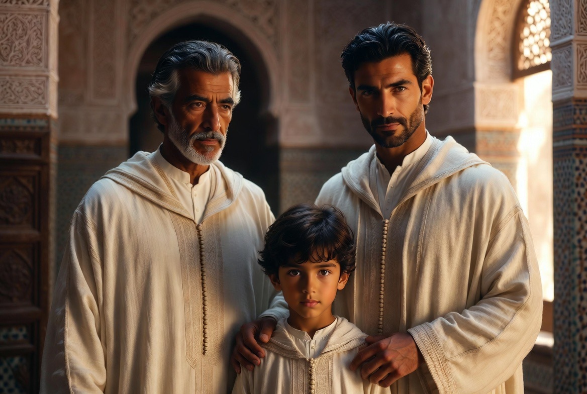

La famille & la communauté
La formation ne se sépare pas de la préparation au foyer. L'homme capable de tenir un métier doit aussi pouvoir tenir une maison.

La madrasa al-ūlā — la première école — reste la famille. Dar al-Hiraf et le Riad forment des hommes pour la continuité générationnelle, non pour une vie isolée du monde des foyers.
كُلُّكُمْ رَاعٍ وَكُلُّكُمْ مَسْؤُولٌ عَنْ رَعِيَّتِهِ، وَالرَّجُلُ رَاعٍ عَلَى أَهْلِ بَيْتِهِ وَهُوَ مَسْؤُولٌ عَنْهُمْ
« Chacun de vous est un berger, et chacun de vous est responsable de son troupeau ; l'homme est berger de sa maison, et il en est responsable. »
Tradition prophétique — Ṣaḥīḥ al-Bukhārī, n° 893 ; Ṣaḥīḥ Muslim, n° 1829
Honorer une femme, élever des enfants, transmettre un métier et une parole : c'est le même mouvement que celui de l'apprentissage. La communauté du Riad s'inscrit dans cette logique.
كالكنز المصون في الصندوق، كذلك المرأة كنزٌ ثمينٌ لا يُعرض لأعين المتطفلين ولا ليد السارق
« Comme le trésor gardé dans son coffre, la femme est un trésor précieux, à ne pas exposer aux regards indiscrets ni à la main du voleur. »
Dans les corporations artisanales du Maghreb traditionnel, le métier se transmettait rarement hors de la famille : le fils héritait du geste de son père en même temps que de son nom. La futuwwa ne séparait pas l'atelier du foyer — elle les tenait ensemble, comme une seule chaîne de transmission.
L'homme qui sort de la formation n'est pas un spécialiste détaché du monde. Il est préparé à devenir le pilier d'une maison : capable de travailler de ses mains, de tenir une parole, de protéger et de transmettre.

Continuité générationnelle
Chaque génération reçoit et transmet. Le métier, la prière, la table, le respect des aînés : ce n'est pas un programme, c'est une chaîne. Le Riad s'inscrit dans cette chaîne sans la rompre.
La maison comme horizon
Former un homme, c'est le rendre capable de fonder. La résidence, les disciplines, la futuwwa convergent vers ce point : non l'isolement, mais la capacité de tenir un foyer.
Communauté de présence
La vie commune du Riad n'est pas une alternative à la famille : elle en est l'apprentissage. Rythme partagé, responsabilité, parole tenue — les mêmes exigences, à une autre échelle.
C'est le même mouvement que décrit la journée du Riad, et que Dar al-Hiraf forme de la main à l'esprit.
Masculinité et responsabilité
Le modèle que nous formons est celui de l'homme capable de tenir seul — métier, maison, parole — et de s'engager dans la durée. Pas un individu flottant : un homme ancré. Voir aussi Fraternité & droiture.
La famille est la cellule de la société. Ce qui se construit ici doit pouvoir se continuer là-bas.